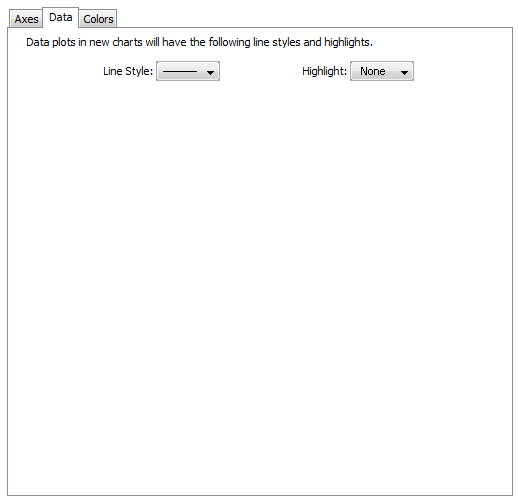
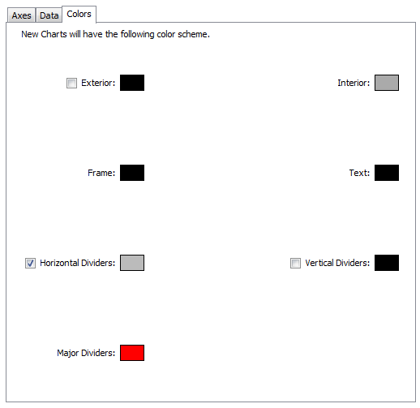

Chart Defaults
Charts (see
Creating Charts and
Using Charts) can show historical data for values received from
one or more devices. Use the Chart Defaults panel of the Server Preferences
section of the Server Settings window to view and edit the default settings
for a newly-created chart.
To view and edit Chart Default
preferences:
-
From the Edit menu, choose Server Settings... The
Server Settings window appears, showing the list of available
settings. On the right is a panel in which the selected settings appear.
- Click Chart Defaults. The Chart
Defaults panel appears in the right panel of the Server Settings
window.
Axes Tab
Use the Axes Tab of the Chart Defaults panel to define the
appearance and behavior of newly-created charts.
Upper Bounds, Lower Bounds -
Enter values to control the vertical scale of the chart. The range
of values depends on the variable being monitored.
Auto-adjust - Select or clear the Auto-adjust check box to choose whether to allow
InterMapper to adjust the scale of the chart automatically. If the Auto-adjust check box is checked, the upper and/or
lower bounds are adjusted automatically so that data points are
always displayed, no matter how much they increase or decrease.
Dividers, Sub-Dividers - Click
the up- and down-arrows or enter a number of dividing lines to set
the number of horizontal dividers and to set the number of
sub-dividers you want to appear between the dividers. Example: Set
the number of dividers to 3. Set the number of sub-dividers to 4.
This gives a total of 11 dividers. (Three dividers - top, bottom,
and center, with four dividers between each. Eight subdividers and
three dividers.)
Show Date, Show Day of Week, Show
Time, 24 Hour Time - Click to select or clear these check boxes
to specify which labels appear on a chart's horizontal axis
by default.
Default Interval -
Use the drop-down
menu to choose a default interval between time stamps on the X-axis
(horizontal) of new charts. Shorter intervals show finer
detail, longer intervals show a longer history.
Note: Because InterMapper saves all the data points, there is
no limit to the amount of memory needed to save a chart.
Choosing a longer time interval does not save memory - all the data
points are saved.
Sub-Dividers - Click the up- and
down-arrows to specify the number of vertical sub-dividers to draw
between data points.
Data Tab
Use the Data Tab of the Chart Defaults panel to choose line and
data point styles.
|
The Data Tab
|
Use the Data tab to control the way in which data appears
in the chart.
Style
Use the Line Style menu to choose a line thickness
for the
default line.

Highlight
Use the Highlight menu to choose the icon
to be drawn at the end of each line segment.

|
Colors Tab
|

The Colors Tab
|
Use the Colors tab to set the default colors for charts.
To change a color:
Click a color box to set the color. A color-selection window appears.
For more information on colors and how they are used, see the
Colors Tab section of Chart Options.
|